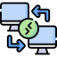

Junte-se a nós nessa jornada tecnológica e descubra como podemos transformar seu desafio em uma oportunidade de sucesso.
Sobre a AnnorTech
A empresa nasceu em 2025, em Santo André, SP, fruto do sonho e da visão de um estudante de Ciência da Computação apaixonado por tecnologia e inovação. Desde o início, nossa missão tem sido oferecer soluções em TI que transformem a maneira como as empresas operam, trazendo eficiência, segurança e inovação para cada projeto em que nos envolvemos.
Com foco em qualidade e resultado, oferecemos uma ampla gama de serviços, desde suporte técnico até consultoria e soluções em segurança da informação, adaptando-nos às necessidades específicas de cada cliente.
Acreditamos que a tecnologia é um motor poderoso de transformação, e nossa missão é ser o parceiro confiável que ajuda nossos clientes a navegar neste mundo digital em constante evolução. Na AnnorTech, valorizamos a confiança, a transparência e a evolução contínua, sempre buscando criar um impacto positivo nos negócios e na vida de nossos clientes.
Estamos comprometidos em proporcionar uma ampla variedade de serviços para atender todas as suas necessidades. Entre os serviços que oferecemos, destacam-se:
Configuração e Manutenção de Redes:
- - Instalação e configuração de equipamentos e programas
- - Monitoramento do desempenho da rede
- - Atualização e correção de sistemas
Segurança de Rede:
- - Implementação de políticas de segurança
- - Configuração e monitoramento de firewalls e sistemas de detecção de intrusões
- - Auditorias regulares de segurança

Suporte Técnico e Resolução de Problemas:
- - Suporte técnico presencial e remoto
- - Diagnósticos para identificação de falhas
- - Aquisição e instalação de componentes e equipamentos
Gerenciamento de Usuários e Acessos:
- - Controle de acesso dos usuários à rede e recursos específicos
- - Configuração e gerenciamento de contas de usuário e permissões
- - Garantir que as políticas de uso aceitável sejam seguidas por todos os usuários
Monitoramento e Relatórios:
- - Monitoramento do uso da rede e elaboração de relatórios
- - Análise de logs e estatísticas de rede para identificação de tendências e problemas
- - Sugestões de melhorias baseadas nos dados coletados e análises realizadas
Planejamento e Implementação de Projetos:
- - Avaliação e recomendação de novas tecnologias e soluções de rede
- - Planejamento e execução de projetos de expansão e atualização de rede
- - Alinhamento dos projetos de rede com os objetivos organizacionais